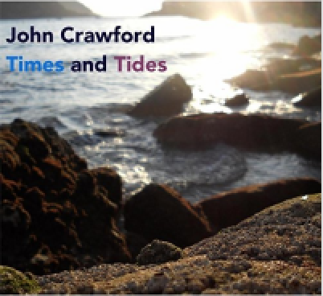

John Crawford: Times And Tides
 By
By
October 28, 2016
Blurred" shares a Brazilian heritage with the cover of Antonio Carlos Jobim's "Once I Loved" that follows it. Guitarist Guillermo Hill makes an immediate impression on nylon-string guitar: he's an effective foil to Crawford's piano. The Jobim tune also features sultry vocalist Linley Weir and saxophonist Duncan Lamont Snr.
"Solea por Brixton" (the solea is one of the most basic Flamenco forms) puts a spotlight on drummer Simon Pearson and percussionist Andres Ticino. "Gabriel's Message" changes things up with a traditional Basque folk song, also a great percussion workout. "Nini" makes a Latin jazz tune out of Antonin Dvořák's "Slavonic Dance No. 2," with lyrics by featured vocalist Eleonora Claps. Remarkable how well the tune fits this new rhythmic setting.
Pat Metheny's "James" gets an exciting new arrangement, with Hill's guitar playing again a particular standout, as well as a contrapuntal guitar/piano duet. The final cover is an inspired choice: "Cono" by the great Malian singer Salif Keita, from his debut album Soro (Mango, 1987). A beautiful tune, with an Afropop groove that fits right in with the Latin ones—and it also provides bassist Richard Sadler a great setting for a solo. Crawford's "Endgame" features one last guest, lyrical flugelhornist Shanti Paul Jayasinha.
A very fresh take on Latin jazz. Crawford's Quintet is a hot band, and the guest musicians each contribute something special without dominating the sound.
Track Listing: Blurred; Once I Loved; Solea por Brixton; Gabriel's Message; Nini; Miriam's Last Journey; James; Cono; Endgame.
Personnel: John Crawford: piano; Guillermo Hill: guitar; Richard Sadler: bass; Simon Pearson: drums; Andres Ticino: percussion; Duncan Lamont Snr: saxophone (2); Shanti Paul Jayasinha: flugelhorn (9); Linley Weir: vocals (2); Eleonora Claps: vocals (5).
Year Released: 2016 | Record Label: Monpas Records | Style: Latin/World